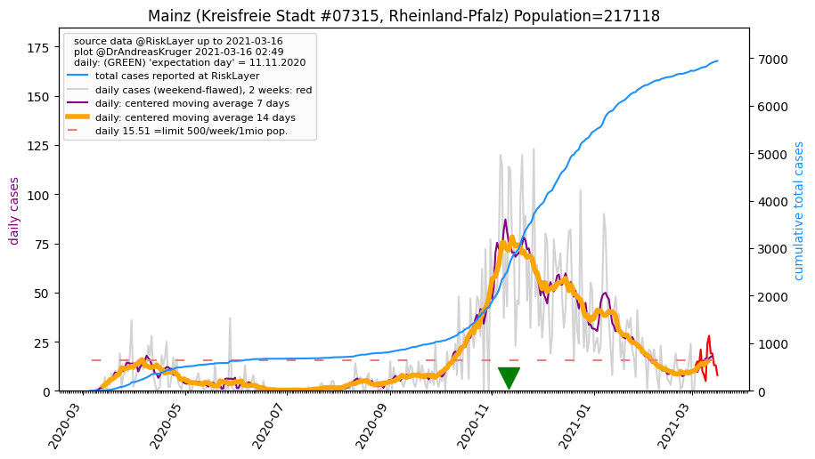
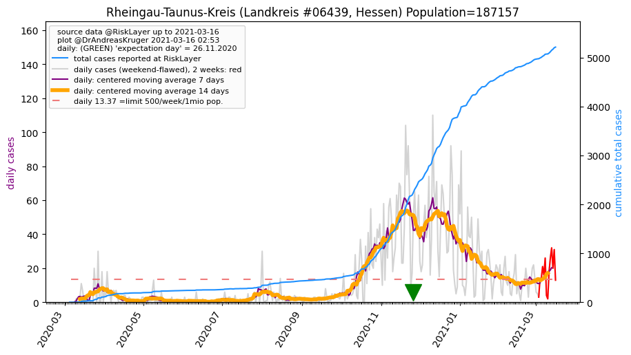
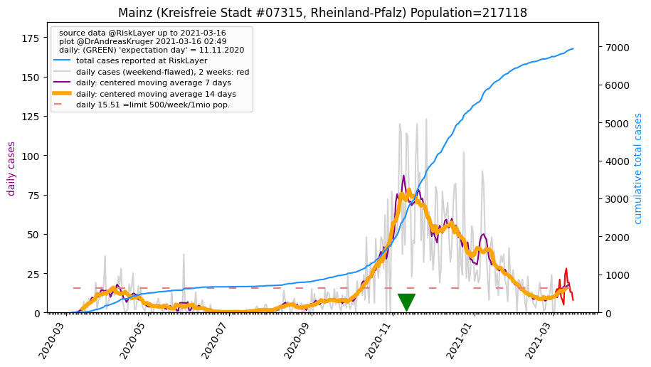
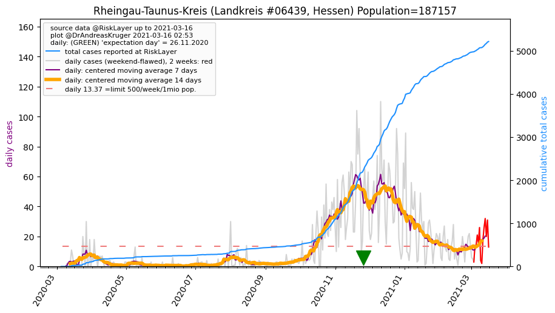

")
")
")
")
")
")
")
")
")
")

")

")
")
")
")
| Frankfurt am Main_KS (0.0 km) |
Offenbach am Main_KS (10.2 km) |
Main-Taunus-Kreis_LK (15.1 km) |
Offenbach_LK (16.1 km) |
| Hochtaunuskreis_LK (20.8 km) |
Darmstadt_KS (26.3 km) |
Groß-Gerau_LK (26.8 km) |
Wiesbaden_KS (27.8 km) |
| Darmstadt-Dieburg_LK (31.1 km) |
Wetteraukreis_LK (32.4 km) |
Mainz_KS (33.0 km)  |
Aschaffenburg_KS (39.8 km) |
| Rheingau-Taunus-Kreis_LK (40.3 km)  |
Aschaffenburg_LK (44.2 km) |
Mainz-Bingen_LK (46.0 km) |
Limburg-Weilburg_LK (46.8 km) |
| Main-Kinzig-Kreis_LK (47.9 km) |
All plots are regenerated with new data every night. Beware this temporary hotspot is an experimental page - it might get removed, so please do not link to it. Instead link to project http://tiny.cc/cov19de.